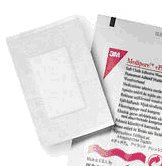

Equipo o Botiquín de Primeros Auxilios
Un buen botiquín de primeros auxilios, guardado en un lugar de fácil acceso, es una necesidad en todos los hogares, locales de grupos y salidas al aire libre.
Tenerlo todo preparado con antelación te ayudará a afrontar cualquier urgencia médica sin perder tiempo.
Elije un bolso o maletín para llevar los artículos que sea espacioso, impermeable, resistente, fácil de trasportar y de fácil apertura.
Las cajas de plástico duro con asas o los recipientes que se utilizan para guardar materiales de artes plásticas o herramientas, son ideales, porque son ligeros, tienen asas y son muy espaciosos.
Un botiquín adecuado para tu Patrulla debe contener:
- 1 manual de Primeros Auxilios.
- 1 equipo de curaciones (tijera, bisturí, pinza de disección y pinza Kelly recta).
- 1 termómetro oral o digital.
- 1 linterna pequeña.
- 3 Jeringas descartables (de 5, 10 y 20 cc).
- 10 baja lengua descartable.
- 4 pañuelos.
- 1 caja de curitas.

- 6 apósitos estériles medianos.
- 4 apósitos estériles grandes.
- 2 parche de ojos estériles.
- 8 vendas de diferentes tamaños (2 anchas, 2 medias y 2 angostas).
- 5 sobres de gasa estéril.
- 1 paquete de algodón.
- 1 adhesivo mediano.
- 2 pares de guantes descartables.
- 1 frasco grande de alcohol isopropílico.
- 1 frasco de antiséptico (rifocina, povidona iodada, mercurio cromo o similar).
- 1 frasco agua oxigenada.
- 1 equipo lavaojos.
- 1 frasco de jabón antiséptico.
- 1 pomada para contusiones.
- 1 pomada para quemaduras.
- 1 antiespasmódico (anís estrellado, atroveran, buscapina u otra por el estilo)
- 5 sobres de antiácido (bicarbonato de sodio, sal de fruta, Alka-Seltzer, etc).
- 1 caja de antihistamínicos (Dexciorfeniramina Maleato, Loratadina u otras similares).
- 1 gotas para los oídos.
Luego de dotar el equipo, es bueno que toda la Patrulla sepa para que sirve cada uno de los elementos y medicamentos que contiene.